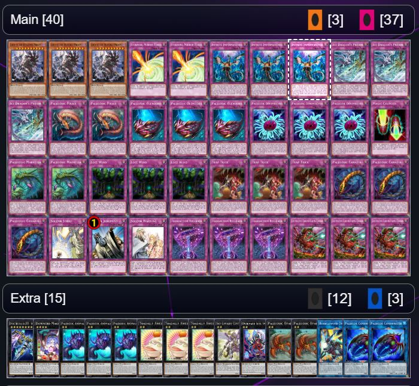
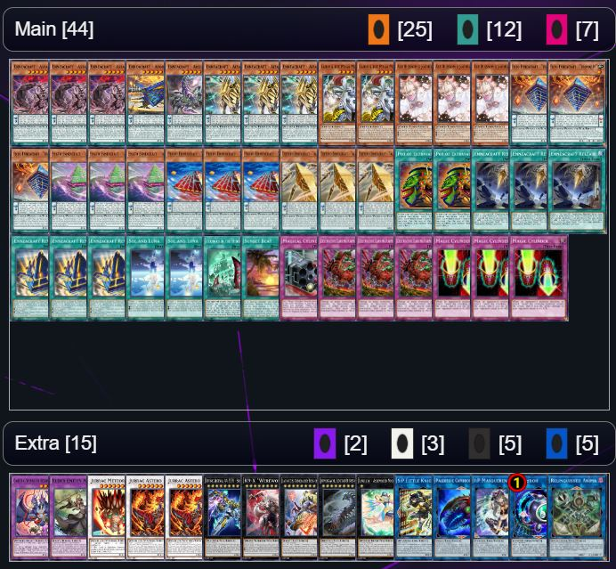
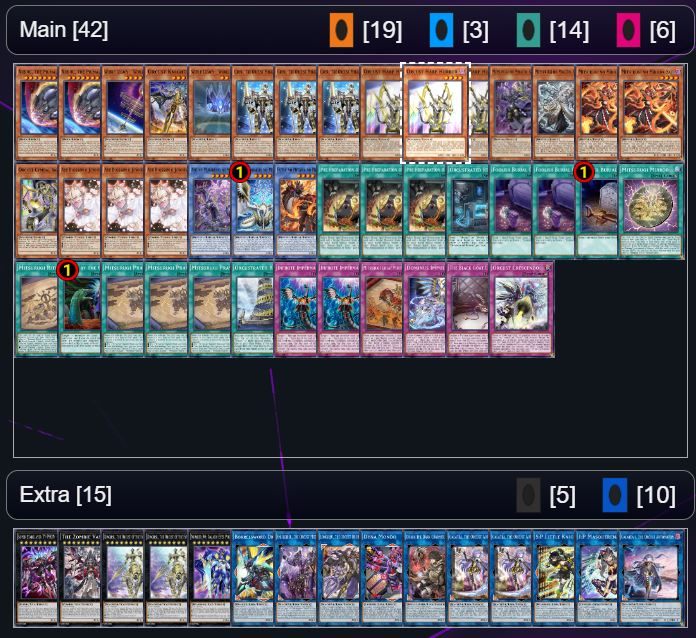

For this page I will have 3 decks where I will try my best to break them down into play style along with give more information on them with each having a table for that information
Deck Recommendation
Deck 1:

Deck List:
Main Deck: 3x Lord of the Heavenly Prison, 2x Storming Mirror Force, 3x Infinite Impermanence, 3x Ice Dragon's Prison, 2x Paleozoic Pikaia
, 3x Paleozoic Olenoides, 3x Paleozoic Dinomischus, 1x Magic Cylinder, 2x Paleozoic Marrella, 3x Lost Wind
, 3x Trap Trick, 3x Paleozoic Canadia, 1x Solemn Strike, 1x Solemn Judgment, 1x Solemn Warning, 3x Transaction Rollback
, 3x Destructive Daruma Karma Cannon
Extra Deck: 1x Divine Arsenal AA-ZEUS - Sky Thunder, 1x Downerd Magician, 3x Paleozoic Anomalocaris, 3x Toadally Awesome
, 1x Sky Cavalry Centaurea, 1x Onibimaru Soul Sweeper, 2x Paleozoic Opabinia, 1x Borrelsword Dragon
, 2x Paleozoic Cambroraster
Play Style:
For this deck called Paleozoic the main strategy is to use as many trap as possible as the cards with the paleozoic name are able to be treated as monsters
through activation of other trap cards where the only monster is one card which is used to protect the trap cards that you have. For the difficulty of this deck
I would say it is fairly lower difficulty as there is not much needed to think about to much with your plays as the main thing to work out is activating traps
at the best time needed.
Deck 2:

Deck List:
Main Deck: 3x Enneacraft - Asta.PIXEA, 1x Enneacraft - Atori.MAR, 1x Enneacraft - Archa.TAIL, 3x Enneacraft - Aiza.LEON, 2x Zaborg the Mega Monarch, 3x Ash Blossom & Joyous Spring
, 3x Ekto Enneacraft - "tromarIA", 3x Enato Enneacraft - "oknirIA", 3x Proto Enneacraft - "orgIA", 3x Deftero Enneacraft - "alazoneIA"
, 2x Pot of Extravagance, 3x Enneacraft Release, 3x Enneacraft Reverth, 2x Sol and Luna, 1x Terrors in the Hidden City, 1x Sunset Beat
, 1x Magical Cylinders, 3x Destructive Daruma Karma Cannon, 3x Magic Cylinder
Extra Deck: 1x Garura, Wings of Resonant Life, 1x Elder Entity N'tss, 1x Jurrac Meteor, 2x Jurrac Astero, 1x Divine Arsenal AA-ZEUS - Sky Thunder
, 1x K9-X "Werewolf", 1x Laevatein, Generaider Boss of Shadows, 1x Jormungandr, Generaider Boss of Eternity, 1x Lyrilusc - Assembled Nightingale, 1x S:P Little Knight
, 1x Paleozoic Cambroraster, 1x I:P Masquerena, 1x Linkuriboh, 1x Relinquished Anima
Play Style:
For this deck the main strategy of this deck is to set monsters and activate their effects on flip where they have powerful effects on flip, to help with this strategy there are multiple
spell and traps that would help in setting the monsters back, along side these spell and traps there is a spell that will do damage to your opponent for each flip summon which is a big way
this deck would do damage. The main monsters that would be flipped even have effects to flip themselves on certain conditions and even have bonus effects if those conditions are left. For this deck
I would say the difficulty to play this deck would be mid range as it does have more plays than the first deck but nothing too crazy and if you want something a little bit more challenging I would recommend
this deck.
Deck 3:

Deck List:
Main Deck: 2x Nibiru, the Primal Being, 1x World Legacy - "World Wand", 1x Orcust Knightmare, 1x World Legacy - "World Crown", 3x Girsu, the Orcust Mekk-Knight
, 3x Orcust Harp Horror, 1x Mitsurugi no Mikoto, Kusanagi, 1x Mitsurugi no Mikoto, Aramasa, 2x Mitsurugi no Mikoto, Saji, 1x Orcust Cymbal Skeleton, 3x Ash Blossom & Joyous Spring
, 1x Ame no Murakumo no Mitsurugi, 1x Ame no Habakiri no Mitsurugi, 1x Futsu no Mitama no Mitsurugi, 3x Pre-Preparation of Rites, 1x Orcustrated Return, 2x Foolish Burial Goods
, 1x Foolish Burial, 1x Mitsurugi Mirror, 1x Mitsurugi Ritual, 1x Called by the Grave, 3x Mitsurugi Prayers, 1x Orcustrated Babel, 2x Infinite Impermanence
, 1x Mitsurugi Great Purification, 1x Dominus Impulse, 1x The Black Goat Laughs, 1x Orcust Crescendo
Extra Deck: 1x Super Starslayer TY-PHON - Sky Crisis, 1x The Zombie Vampire, 2x Dingirsu, the Orcust of the Evening Star, 1x Number 90: Galaxy-Eyes Photon Lord, 1x Borrelsword Dragon
, 1x Enlilgirsu, the Orcust Mekk-Knight, 1x Longirsu, the Orcust Orchestrator, 1x Dyna Mondo, 1x Dharc the Dark Charmer, Gloomy, 2x Galatea, the Orcust Automaton, 1x S:P Little Knight
, 1x I:P Masquerena, 1x Galatea-i, the Orcust Automaton
Play Style:
This I'd say is the most difficult deck to play as for the option this deck allows is much more than any of the other decks listed here as it combines two deck archetypes where both don't rely
on each other or stop each other from playing. The way the orcust part of this deck play is it sends cards to the graveyard and benifets from that where you can summon more and even with some cards
can play on your opponent's turn. As for the Mitsurugi part you use all your monster to plus of each other as they all have effects that triggger if they are tributed where each effects allows you to
play for longer and allows to set-up a strong board and with the building of the strong board allows for protections from any protections from the opponents card effects.
Statistics on the Decks:
| Deck # | Monster % | Spell % | Trap % | Win Rate (In 10 games) |
|---|---|---|---|---|
| Deck 1 | 7.5% | 0% | 92.5% | 40% |
| Deck 2 | 56.8% | 27% | 16.2% | 50% |
| Deck 3 | 52.4% | 33.3% | 14.3% | 70% |
Form on experience with the deck:
Credits to This site in order to make the decklist images used.